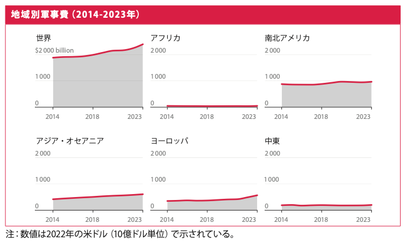
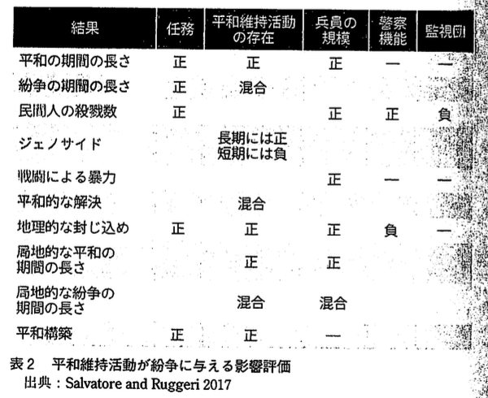
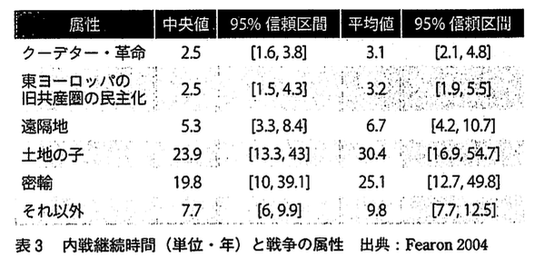

政治学概論Ⅱ ＃5 国際政治学（4）
国際政治を見る視点（2）
![]()
授業時間
授業時間
第7講の映画鑑賞の時間を確保するために、第6講と第7講の授業開始時間、終了時間、授業時間は、変則的になっています
- Week 6 (2/4 13:00-14:10) ：国際政治学（4）
- Week 7 (2/4 14:20-16:35) ：国際政治学（5）
キーワード
キーワード
- 勢力均衡
- 軍備縮小
- 安全保障のジレンマ
- 歴史的アプローチ
- 計量的アプローチ
勢力均衡と軍備縮小
安全保障のジレンマ
- 国民国家の理念と戦争の拡大
- 安全保障のジレンマ
- 当該国の意図にかかわらず、ある国の軍備は他国に脅威感を呼び起こす
- ➡軍備競争へ
- Cf.トランプ政権高官候補トゥルシー・ギャバードの日本観
同盟国・日本に対する見解を問われたギャバード氏は「日本と中国の歴史を巡る見地に立てば、日本が自衛態勢から攻撃的な態勢に移ることでエスカレートする可能性がある」と述べた。過去にも日本の防衛力強化への疑念を表明しており、この日も持論を展開した（ 「アメリカ国家情報長官候補「日本が攻撃的な態勢に移ればエスカレートする可能性」…上院公聴会で持論」（『読売新聞』 2025年1月31日））。
- 国政政治学の基本命題：このジレンマからいかに抜け出すか（中西寛 (2003), p.94）
安全保障のジレンマ
- Cf. ストックホルム国際平和研究所『軍備・軍縮年鑑』

安全保障のジレンマの解決法
解決法1：世界国家の設立
- 問題点：少数派の自由が抑圧される可能性
- 例：ナポレオン帝国；ヒトラー帝国
解決法2：勢力均衡論
- 主権国家間の軍事力の現状維持で満足する
- 特徴：絶対的な平和を希求しない
- ウィーン体制；米ソ冷戦
- Cf. カント『永遠平和のために』
- 競争心の肯定 ➡ 人類の能力の向上に寄与[^0]
国際法（Völkerrechts）の理念は、それぞれ独立して隣りあう多くの国家が分離〔分離に傍点〕していることを前提とする。……しかしそれにもかかわらず、まさにこうした状態の方が、理性の理念によるかぎり、他を制圧して世界王国を築こうとする一強大国によって諸国家が溶解してしまうよりも、ましなのである（カント，イマヌエル（宇都宮芳明訳） (2009), pp.71–72）
- 問題点：大国の現状維持のために説明が利用される
- 大国の没落と新興国の台頭をうまく説明できない
安全保障のジレンマの解決法
解決法3：国際機構の設立
2 「実に、国際機構と主権国家の追求する国家的利益の関係こそ、今日の国際政治におけるもっとも基本的な問題である。もはや、国際機構は夢物語りではなくなったし、たとえ世界連邦ではなく、従って、たとえ不完全なものではあっても、国際機構は存在しているからである。また、逆に、今日の国家は相互依存の増加につれて、国際機構と無関係に国家的利益を追求することは不可能となっている。かくて、かっては純粋に理論的な問題であった主権国家と国際機構の関係は今や現実の問題となって来ているのである。われわれが国家的利益ということを否定しない限り、われわれはこの問題を充分に検討する必要がある。 この書物（ヒンズリー『権力と平和の模索』）は、その問題に対する大胆で、そしてきわめて常識的な研究である。それは、科学的合理主義を排するというイギリス的な常識の産物であり、その故にこそ、科学的合理主義の支配する現代においてはきわめて大胆に見えるのかも知れない」（高坂正堯 (1964), p.125）
安全保障のジレンマの解決法 > 解決法3
- 集団安全保障
集団安全保障は、諸国があらかじめ平和を保つ条件を盟約し、それに反した侵略国に対しては他の国家が一致して制裁を加える国際機構を創設することで、侵略を抑止し、万一の侵略の場合には撃退する体制を意味する（中西 2003: 95-96）
- 国際連合の集団安全保障規定
- 憲章第7章「平和に対する脅威、平和の破壊及び侵略行為に関する行動」
第42条 安全保障理事会は、第41条に定める措置では不充分であろうと認め、又は不充分なことが判明したと認めるときは、国際の平和及び安全の維持又は回復に必要な空軍、海軍又は陸軍の行動をとることができる。この行動は、国際連合加盟国の空軍、海軍又は陸軍による示威、封鎖その他の行動を含むことができる（国連憲章テキスト）。
- ➡ 個別的自衛権に取って代わることを目指す
国際機構の失敗
⑴ 国際連盟の失敗
- 国際連盟規約への違反の解釈権を、主権国家に委ねる
- 自国が直接にかかわらない戦争に巻きこまれることを恐れる
- 戦争に訴えない義務
- 宣戦布告のない戦争は戦争ではない
- Cf. E. H. カー：国際連盟への期待を「ユートピアニズム」と呼び、その楽観論を批判
国際機構の失敗
⑵ 国際連合への期待と失敗
1) 五大国を中核とする安全保障理事会
- 安全保障理事会の役割
- 侵略行為の認定
- 侵略に対する対抗措置
- 安全保障理事会の機能不全
- 米ソ対立により、安保理が一致して行動をとることは困難に
- 代替措置としての「平和のための結集決議」
- 安保理が機能しない場合に、一定の範囲内において、総会で集団安全保障を実現するようにするためのもの（自動的に参戦を義務づけられる）
- アメリカ、朝鮮戦争（1950年）時に、総会において「平和のための結集決議」を採択するよう、働きかける。しかし、朝鮮戦争以降、各国は「結集決議」に同意せず
- ➡ 集団安全保障の非現実性が明るみに
- ➡ 各国は、主権国家としての選択肢を守り、自衛による安全保障を目指す（中西寛 (2003), p.99）
国際機構の失敗 > 国際連合への期待と失敗
2) 主権国家システムの明示
- 「すべての加盟国の主権平等 sovereign equalityの原則に基礎をおいている」（国際連合憲章第2条）
- 「すべての国家は、他のすべての国と法上平等である権利をもっている」（国際連合憲章第5条）
- ➡ 中小国家の、総会、各種委員会での投票行動が重要に
- 大国は中小国の意向を無視できず
- 例：日本のODA政策（安保理非常任理事国への賛同を要する）
- 例：中国の一帯一路構想
「恐怖」の制度化
1. 軍備管理（アームズ・コントロール）
- 軍事的関係の安定化を図ることで、緊張緩和を目指す
- 弾道ミサイル迎撃ミサイル制限条約；第一次戦略兵器制限協定（1972年）
- マクナマラ国防長官、相互確証破壊（MAD）と呼ぶ
- ➡ 1980年代の米ソ対話再開へ（冷戦終結）
- ➡ 2000年代以降、中国の台頭を受け、核軍縮の流れは頓挫
「恐怖」の制度化 > 軍備管理（アームズ・コントロール）
- 現在：第2次トランプ政権の対中核軍縮政策
- オリアナ・スカイラー・マストロ（フリーマン・スポグリ国際研究所のセンターフェロー）の見解
- Oriana Skylar Mastro makes a case for paring America’s nukes（The Economist Jan 6th 2025)
「「軍拡競争をしよう。あらゆる局面で彼らを凌駕し、彼らすべてに打ち勝とう」。ドナルド・トランプ氏は、2016年、初めてホワイトハウスに入る直前に、アメリカの核兵器を「近代化し、再構築する」という野心的な議題の基調を定めた。彼の2期目では、その重要性はさらに高まっている。差し迫った問題は、トランプ政権がアメリカの核抑止力をどの程度更新するのか、という点である。賢明な選択は、核弾頭の数を増やすのではなく、減らすことである。
したがって、米国は非対称的な軍備管理を検討すべきである。例えば、インド太平洋地域における米国の空母に特に脅威を与えるような特定の中国の通常ミサイルの非活性化と引き換えに、米国の核弾頭の数を減らし、その警戒レベルを下げることなどが考えられる。中国にとっては、通常兵器を使用して米国の台湾防衛を阻止する能力が低下することを意味する。しかし、このシナリオでは、アメリカは中国の核兵器を標的にし、中国に降伏を強いるために核による威嚇にエスカレートする可能性は低いだろう。核による生存可能性を考慮すれば、中国はこの抑止力のトレードオフに同意する理由がある。
「恐怖」の制度化
2. 信頼醸成措置
- 潜在的敵対国との間で誤解や誤算による戦争を防ぐ
- 軍備情報の公開
- 例：CSCE（ヨーロッパ安全保障協力会議）「ヘルシンキ宣言」（1975年）
- 軍事演習の通告・査察；軍事演習へのオブザーバー招聘
歴史的アプローチと計量的アプローチ
歴史的アプローチ（古典的アプローチ）
⑴ 国際政治学の京都学派
- 高坂正堯；中西寛
- 第5回講義を参照
⑵ 国際政治学のイングランド学派
- イングランド学派（日本では英国学派として定着している）
- 第2次世界大戦後、London School of Economisに属する研究者を中心とする研究者集団
- 1990年代の計量的アプローチ（後述）の台頭を受け、それを受け入れない研究者集団により、再び注目を集める
歴史的アプローチ > 国際政治学のイングランド学派
- 国際社会（international society）の自律性を主張
- 主権国家の単なる総和ではない
-
主権国家からなる空間に一定の秩序、規範が存在し、むき出しの国益の追求、暴力の正当化を抑制する
- 国際法；慣習；勢力均衡
- 主権国家間の法定対等性
- 国際法；慣習；勢力均衡
- 国際社会はアナーキー（無秩序）ではない
- 「ホッブズ的恐怖の状況」（歴史家・バターフィールド）
- むき出しの権力闘争；弱肉強食
歴史的アプローチ > 国際政治学のイングランド学派
- 方法論的特徴
- 国際関係に関する古典の発掘、国際関係史と国際法史を用いて、国際社会の存在の立証に努める
「わが国において、『国際政治理論』という名称は広く通用していないし、明解な意味もない」。英国委員会はアメリカ委員会に比べ「現代よりも歴史、科学よりも規範、方法論よりも哲学、政策よりも原則」を関心の対象としている。この表現には、これから検討してゆく英国学派の特徴が、感覚的に表れているように思われる（大中真 (2020), p.7）
歴史的アプローチ > 国際政治学のイングランド学派
代表的研究者：マーティン・ワイト
- 国際理論の3つの伝統（3つのR）（『国際理論：三つの伝統』）
- 合理主義：グロティウスら
- 国際社会を「主権国家からなる社会」と見做す
- 国際慣習法；戦争法規；不干渉原則；主権；勢力均衡；外交慣行
- 主権国家の行動は､国際社会の規範により､一定の制約を受ける
- 国際社会を「主権国家からなる社会」と見做す
- 革命主義：カント；ヴォルフ
- 国際社会を「全人類からなる共同体」と見做す
- 現実主義：マキアヴェッリ；ホッブズ；ヴァッテル
- 国際社会を「国際的自然状態」と見做す
- 合理主義：グロティウスら
- ➡ワイト自身は、グロティウス主義に最も親近感を抱く
計量的アプローチ（科学的アプローチ）
日本の代表的研究者：多湖淳
- 多湖淳 (2020) 『戦争とは何か：国際政治学の挑戦』, 中央公論新社.
- 戦争と平和をどのように論じるべきか
- 理論とデータを用いた科学的説明＝統計学的説明の推奨
- アメリカの主流アプローチ（IRと書かれている場合、通常、このアプローチを指すほど、一般化している。IRはInternational relationsであり、文字通り、国際政治学を指すはずだが）
- 戦争の個別性ではなく、戦争の一般化を目指す
- Cf. 歴史的アプローチは、通常、個別具体的な出来事の説明を目指す
計量的アプローチ（科学的アプローチ）
計量的アプローチの優位性
- 低コスト
- 共通理解を促す高い説得力
- 予測と建設的な政策議論が可能
- Cf. 歴史的アプローチは過去と現在の類似性は指摘できても、印象論にとどまる
科学が高い説得性をもつのは、透明性の高い手順で構築され、かつ妥当とされる方法論を あてはめて処理されたデータ分析の結果があり、分析の質や内容を再確認ができる形の「エビデンス」(証拠)が提示されることにある。その質と内容が再確認できることは、反論を 可能にし、分析の改善を常に保証する （多湖淳 (2020), pp.19–20）
母集団とサンプルの話を踏まえ、本書は戦争を確率でとらえる。サンプルから母集団の真の値を推定するという統計学の考え方を戦争と平和の理解にも応用する（多湖淳 (2020), p.28）
計量的アプローチ（科学的アプローチ）
具体的な（説明・論証可能な）リサーチクエッション
- なぜ戦争は始まってしまうのか
- 戦争は悲惨であるだけでなく、コストがかかることは常識
- どうして戦争はもっと早く終わらないのか （なぜ戦争は長引くのか）
計量的アプローチ（科学的アプローチ）
研究成果①：民主的平和論のデータによる裏付け
- 民主的平和論＝民主主義国同士は戦争をしにくい
- 1816年から2013年までの戦争のうち、民主主義国同士の戦争はわずか2例
- 1974年のトルコ対キプロス
- 1993年のインド対パキスタン
- 情報の非対称性が低い（お互いに予測可能性が高く、それゆえに外交的コミュニケーションを図ることができる）
- 1816年から2013年までの戦争のうち、民主主義国同士の戦争はわずか2例
計量的アプローチ（科学的アプローチ）
研究成果②：内戦の実証研究
- 国家間戦争に比べて、内戦は研究蓄積が乏しい
- 内戦の原因：
- 垂直的な不平等（所得、学力など、個人に付帯する格差）
- 集団間の水平的な不平等（性別、民族、言語、宗教の帰属の違いによる格差）
- ➡ 格差を数えやすい
- 4つの集団に分類：
- A. まったく権力をもつことのない集団
- B. 差別を受けている集団
- C. 地域的な自治を与えられているものの中央政治に参画できない集団
- D. 分離独立をもとめている集団
計量的アプローチ（科学的アプローチ）
ここで、政治的な面で水平的な平等を欠いている場合、シダーマンらの研究結果によるし 【A】は5,320(集団・年)のうち、内戦を起こしたのが25(集団・年)あり、割合と ては0.47パーセントであった。【B】は9,735(集団・年)のうち、内戦を起こし のが63(集団・年)あり、割合としては0.64パーセントであった。【C】は50= (集団・年)のうち、内戦を起こしたのが63(集団・年)あり、割合としては一・二五パ セントであった。【D】は489(集団・年)のうち、内戦を起こしたのが27(集団・ あり、割合としては5.52パーセントであった。
これに対して、社会的に優遇されていると考えられる、政治体制に組み込まれている集団については、12,902(集団・年)のうち、内戦を起こしたのが29(集団・年)あり、 割合としては0.2パーセントに過ぎなかった。圧倒的な差がある。
経済的な面で水平的な平等を欠いている場合にも、統合されずに疎外されている集団が内 戦を引き起こす確率は相当に高く、疎外されていない集団との比較で、内戦の開始確率が大 きく違ってきてしまうという計算が得られている。疎外された集団が引き起こす内戦の開始 確率は10パーセント程度で、疎外されていない集団が内戦を起こす確率はほぼゼロであった > 科学が高い説得性をもつのは、透明性の高い手順で構築され、かつ妥当とされる方法論を あてはめて処理されたデータ分析の結果があり、分析の質や内容を再確認ができる形の「エビデンス」(証拠)が提示されることにある。その質と内容が再確認できることは、反論を 可能にし、分析の改善を常に保証する （多湖淳 (2020), pp.100–101）
計量的アプローチ（科学的アプローチ）
介入効果の検証
- 国連平和維持活動は内戦後の「平和の期間」を長時間維持する効果あり
- 早く終わる内戦、長引く内戦
- 内戦の属性（種類）と内戦の継続時間の関係
- 属性：
- 首都をめぐる内戦：クーデター・革命；東ヨーロッパの旧共産圏の民主化
- 平均3年程度
- 分離独立型の内戦：遠隔地；土地の子；密輸
- ＋資源が絡む内戦
- 平均7年から30年
- 首都をめぐる内戦：クーデター・革命；東ヨーロッパの旧共産圏の民主化
計量的アプローチ（科学的アプローチ） > 介入効果の検証

- 出典：多湖淳 (2020)
計量的アプローチ（科学的アプローチ） > 介入効果の検証

- 出典：多湖淳 (2020)
計量的アプローチ（科学的アプローチ） > リーディングアサインメント
p.107 私が面白いと思った箇所は常任理事国の国際介入に対する意思についてである。国際介入が為される場合や地域についての部分が印象に残った。国際介入は安保理の常任理事国の意思が大きく反映されていることが分かった。戦死者数が多いほど、冷戦後ほど、ラテンアメリカ・カリブ海諸国は介入が早く行われる。一方、アジア地域は相対的に介入が乏しく、常任理事国の意向や関心の薄さで平和維持活動の発動のしやすさがこうも変化するということが興味深かった（内坂）。
国際社会による内戦への介入が成功するためには、いくつかの条件があるという点P１０４。前回のリーディングアサインメントの「現実への対処」（『国際社会』）の中で、国際社会の混乱を直すためには間接的でしか直すことができないと書かれていたため。内戦への介入は国際社会の混乱の中への直接的なアプローチになるので、内戦への介入が成功する場合があるという事に驚いた。しかし、成功するには一定の条件があり、今までも失敗してきた事例があるという事がわかった（冨谷）。
計量的アプローチ（科学的アプローチ） > リーディングアサインメント
戦争の種類（首都をめぐるものか独立内戦型か）によって戦争の年数が変わってくるなど、合理的に説明がつくとされる点（110ページ）。戦争に対して合理的な説明をしている点に、人間のいやらしさを感じた。戦争が起こるのには必ず理由があるし、その理由によってどのくらい続くかというのもある程度予想できる。そういったことをわかっていながら、あえて戦争に踏み込んでいく人間は、不思議だと思う。なぜ戦争をするのか、したがるのか、戦争でない解決方法に向かおうとしないのか、楽な方に逃げているだけではないか、人間はとてもずるいと思った（野田）。
宿題
宿題
- 授業の感想
対面授業の際は、各コマではなく、一日の授業うちで１つのトピックについて書いて下さい
- リーディングアサインメント
- レポート課題
内容､期日については「提出物（提出先）」を参照